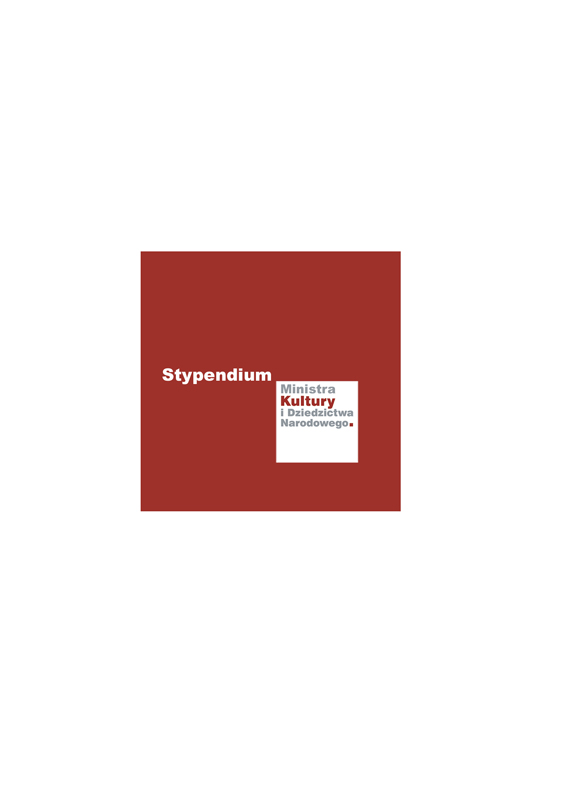

Zrealizowano w ramach stypendium Ministra Kultury i Dziedzictwa Narodowego.


Opowiadacze zaangażowani to 12-miesięczny projekt, w którym pasjonaci sztuki opowiadania przygotowują spektakl narracyjny, a następnie docierają z nim do osób dotkniętych ubóstwem na terenie Warszawy. Spektakl (wieczór opowieści) jest punktem wyjścia do wspólnych działań narracyjnych z osobami ubogimi. Celem projektu jest wsparcie integracji i rozwoju osób dotkniętych ubóstwem oraz rozwój kompetencji artystycznych i animacyjnych członków grupy. Projekt jest realizowany w ramach stypendium artystycznego Ministra Kultury i Dziedzictwa Narodowego.
W pierwszej połowie 2019 roku grupa zawiązała się i wyznaczyła cele działania:
Poprzez opowiadanie i działania warsztatowe z osobami ubogimi chcemy realizować takie cele jak: budowanie relacji, walka z dyskryminacją, zabawa, tworzenie przestrzeni dialogu, dzielenie się, partnerstwo, tworzenie kultury, inspirowanie.
Członkowie grupy rozwijali swoje umiejętności i przygotowywali repertuar opowieści podczas cotygodniowych warsztatów prowadzonych przez Jerzego Szufę w Teatrze Ochoty. W efekcie grupa przygotowała spektakl narracyjny pt. Przemiany, zagadki, tajemnice - wieczór opowieści.
Wieczór opowieści to szczególna i jednocześnie zwyczajna forma artystyczna. Nie wymaga sceny ani nagłośnienia, strojów, ani rekwizytów. By się wydarzyć, potrzebuje jedynie ludzi - takich, którzy chcą opowiadać i takich, którzy chcą słuchać. No, może przyda się też kameralna przestrzeń, żeby się można było zasłuchać. No, i z pewnością konieczna jest sama opowieść!
W programie Przemian, zagadek i tajemnic każdy z opowiadaczy dzieli się historią, która jest bliska jego sercu, która zaciekawiła go, poruszyła lub zaintrygowała. W każdej opowieści akcent położony jest na jeden z tytułowych wątków: przemianę, zagadkę lub tajemnicę.
Posłuchajcie, posłuchajcie! Gdzie zniknęły kapelusze? O czym śpiewa strumień? Co palacz znalazł w kotle? Co to za dziwna woda? Kto jest tam, po drugiej stronie? Dokąd prowadzi ścieżka? Kto rozwiąże zagadkę Sułtana? Uczony, głupiec, czy opowiadacz?